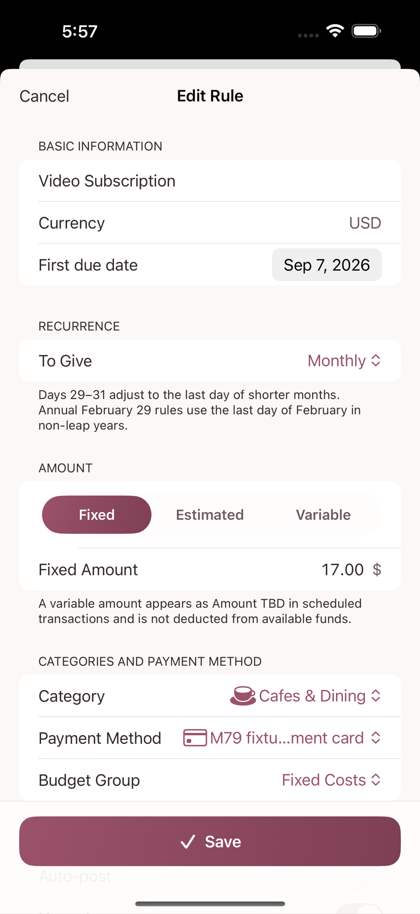
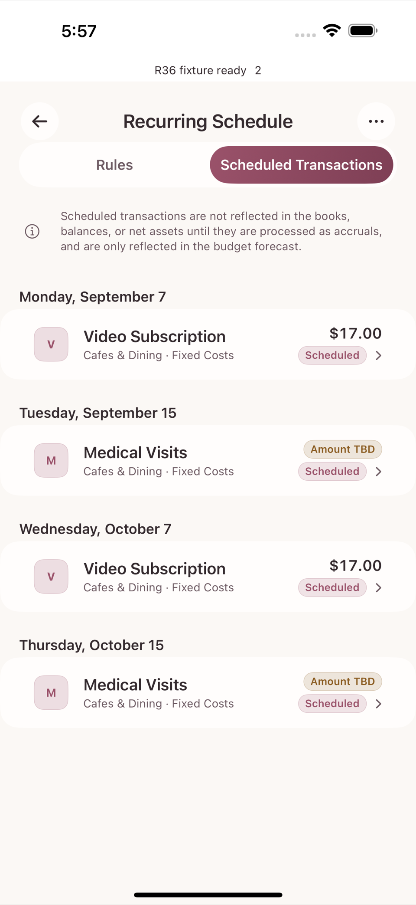

A recurring rule lets you register spending that repeats every month (subscriptions, utility bills, regular medical visits) and have scheduled transactions created for you automatically. By the end of this chapter you should be able to tell these three roles clearly apart.
category = decides the nature of the spending (what it was for)
budget group = decides which limit it is drawn from (how much may be spent)
recurring rule = applies those values in advance to create scheduled transactions
(it does not allocate any funding)The recurring rules screen is reached from the Recurring Rules row in Settings. Inside, a Rules segment and a Scheduled Transactions segment let you switch between the list of rules and the list of scheduled transactions.
Fixed Costs budget group, in the same family as the "living costs" groups in chapter 6 (September allocation $200).Subscriptions, paid by credit card.Medical, paid by credit card.On the add-rule screen you set the name, the amount (or "Amount TBD"), the repeat cycle (which day of the month), the category, and the payment method. The rule itself allocates no funding — it only fills the category and payment method into the next scheduled transaction for you.

Saving a rule automatically creates the next scheduled transaction.
| Scheduled transaction | Date | Amount | Effect on the budget screen |
|---|---|---|---|
| Video Subscription | 7 September | $17.00 | Deducts $17.00 in advance from the scheduled amount left in the Fixed Costs group |
| Medical Visits | 15 September | TBD | Only the count is shown; no amount is invented |

At this point the Fixed Costs group reads like this.
allocated $200 − actually spent $0 − scheduled still to come $17 = $183 available (including scheduled)The important point: a scheduled transaction does not yet change any account balance or spending statistic. It only lowers the available amount on the budget screen ahead of time, as a planning signal that says "this money is about to go out, so do not spend it on something else."
When 7 September arrives and the payment actually happens, tap the scheduled transaction to open the Confirm occurrence screen and tap Post to turn it into a real transaction.
Fixed Costs group goes up by $17.00, and the scheduled amount still to come of the same size disappears.after posting: allocated $200 − actually spent $17 − scheduled still to come $0 = $183 availableNotice that the available amount is $183 both before and after posting — which is to say the app does not double-count by subtracting the scheduled amount and the actual spending at the same time.
Suppose that next month the Video Subscription payment date moves from the 7th to the 29th. If you change the repeat day to the 29th on the rule edit screen:
If you leave a scheduled item like Medical Visits alone because the amount never matches, it simply stays in the unprocessed scheduled state. There is no button and no swipe action for marking an individual scheduled item as "Skip" — "Skip" is a status label that appears automatically, and only when you delete a rule. If that rule already has posted or skipped history and so the rule itself is judged worth keeping, the unprocessed scheduled items left at that moment are cleared away as Skip at the same time.
If you want to stop using a rule right now but not delete it, turn off the Use rules switch on the rule edit screen. That only stops new scheduled items from being created; items already created stay exactly as they are and are not marked as skipped. To remove it entirely, tap Delete on the same screen. A rule with no posted or skipped history at all is deleted together with its unprocessed scheduled items; a rule with history is kept, and only its leftover unprocessed scheduled items are cleared away as skipped (past real transactions are always preserved).
| Question | Category | Budget group | Recurring rule |
|---|---|---|---|
| What was this spending | Subscriptions answers it | — | — |
| How much may I spend | — | The Fixed Costs allocation of $200 answers it | — |
| When and how much is the next payment | — | — | The rule tells you in advance, as a scheduled transaction |
No single one of the three axes shows you the whole picture. Remember that a recurring rule only tells you in advance, and that the real effect on the budget is settled only after the occurrence is posted.